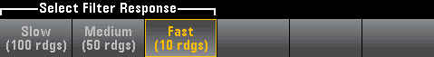

(34465A/70A only) Smoothing uses a moving average (boxcar) filter to reduce random noise in measurements. Smoothing is intended to average out small variations in the measurements. Larger variations will cause the filter to reset.
Press Response to select Slow (100 readings), Medium (50 readings), or Fast (10 readings) to average.

The smoothing filter applies to all measurement functions except Digitizing, Data Logging, Continuity, Diode, and Probe Hold.
The smoothing filter starts out from a reset condition (no readings in the filter) and is reset if the measurement function is changed or if a reading is too far beyond the current average. After the filter is reset, the reading is the average of all readings up to the specified response (10, 50, 100). At that point, the reading is the moving average of the last 10 (Fast), 50 (Medium), or 100 (Slow) readings. Equal weighting is applied to all readings in the average.
The icon (top, right-side of the display) indicates the variation of readings, the amount of allowable readings in the filter, and when the filter is reset as follows: